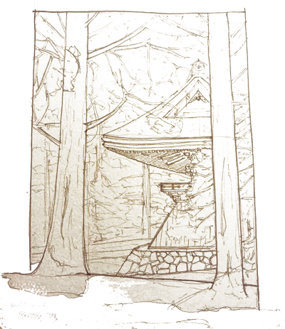
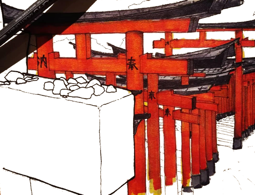

Cutting Ties

Floating through
Cloud rides up mountains
Ise, Inari, Koyasan
Face pressed to glass
As I drift away
Cutting ties
The Shimenawa brings me back
Reattached
Following kodama
Crossing boundaries
It’s raining but
The sun shines
Fox’s wedding weather
Cutting ties
The Shimenawa holds me down
Still attached
A roof up the hill
An overgrown temple
Off the path
I step humbly in
Always look down
Cutting ties
The Shimenawa speaks to me
Detached
A butterfly alights
A voice I’ve heard
Stepping off the path
Into the forest
A dancing trail
Cutting ties
The Shimenawa is behind me
Floating
In a new world
A lightness within
Each breath, each pause
Light shatters the trees
The butterfly rests
Ties cut
The Shimenawa forgotten
No me
Then it all snaps back... Where am I?
Too far off the path – a drawing in hand
Butterflies and foxes
Leading me into my own mind or out of it
Pencils and inks
Helping me cut ties with here, with now, with me
Cut ties
The Shimenawa brings me back
A binding force
Down a cloud – no a train
Trying to regain that
Emptiness
That feeling of light
Of floating
Cut ties
The Shimenawa holds me here
But I am satisfied
More boundaries
To step through
To respect and draw
To listen to and use
To let go
